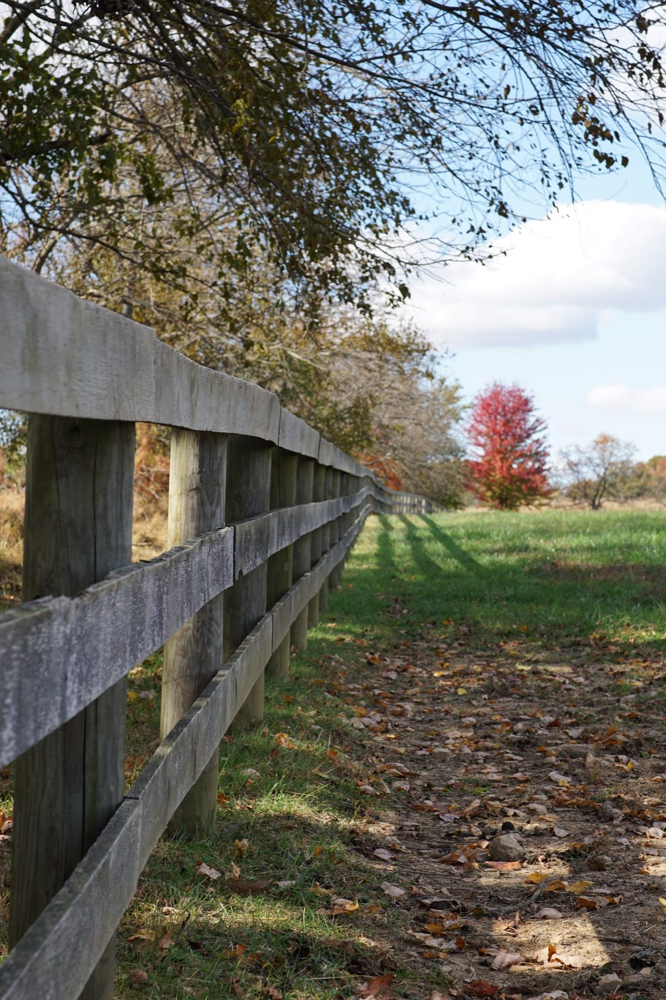
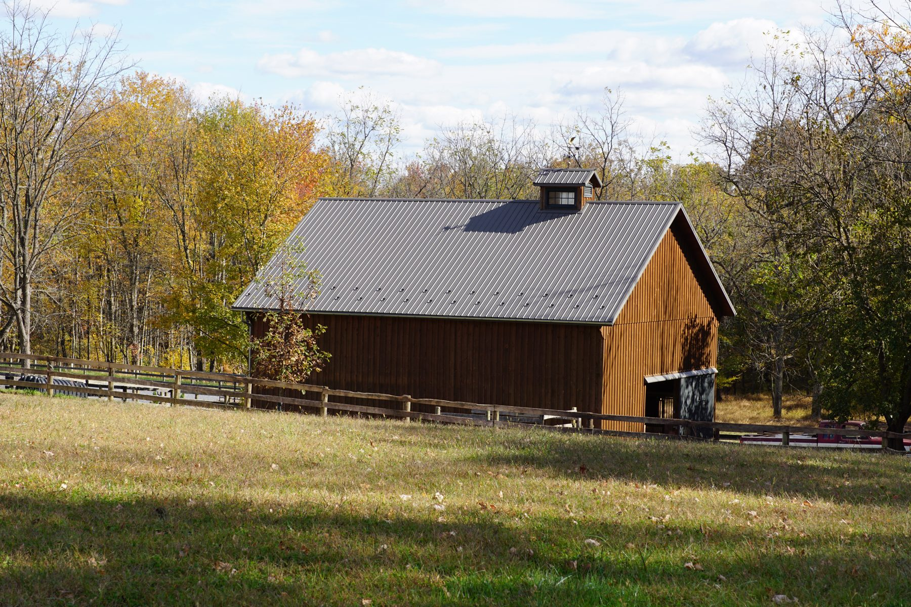
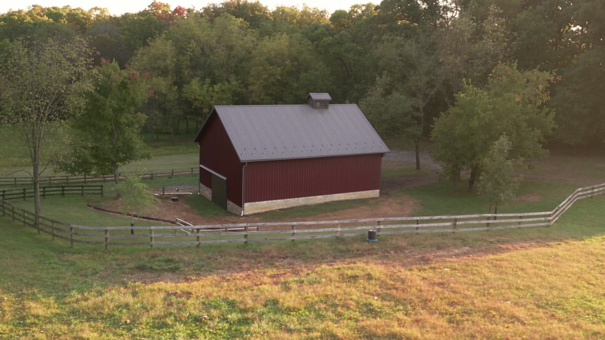
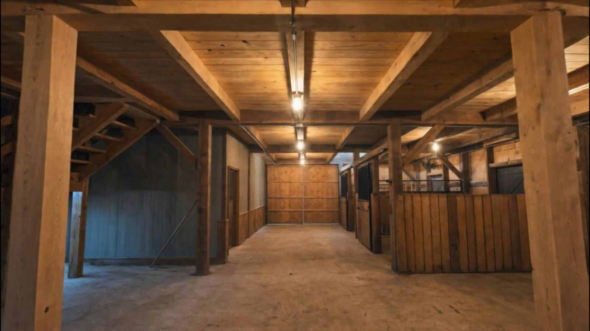
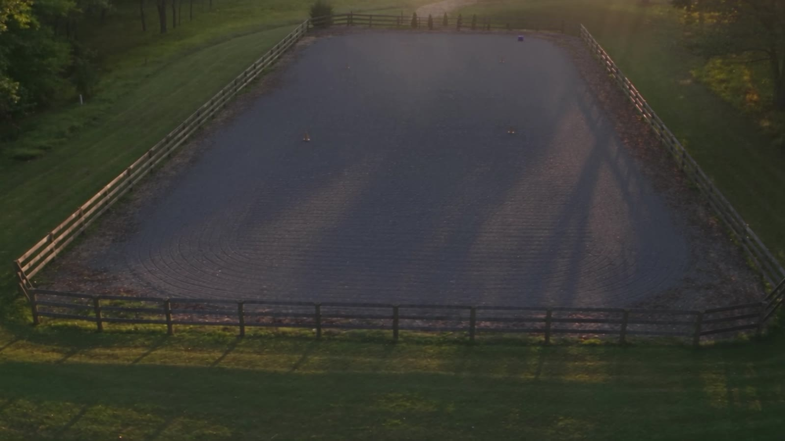
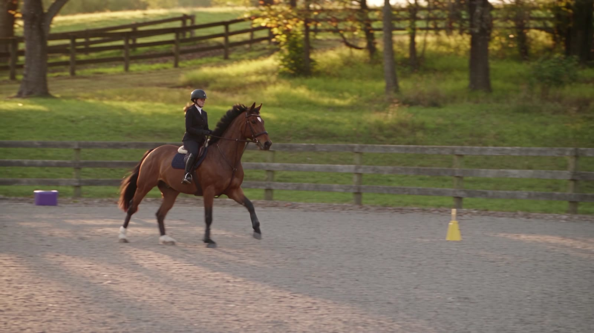

A private equestrian property in the countryside of Upperco, Maryland. Keep your horses in a timber frame barn, ride in a full-size ring and turn out on six acres of fenced pasture, all without sharing the space.
Contact



Private use of the barn, two stalls, paddock, riding ring and field.